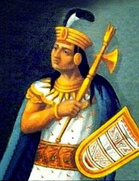

Fue el último gobernante del Imperio Inca, hijo de Huayna Cápac y de una princesa quiteña.
Gobernó desde Quito y se destacó como un hábil estratega militar, fortaleciendo el poder en el norte del imperio.
Su guerra civil contra su hermano Huáscar debilitó al Tahuantinsuyo justo antes de la llegada de los españoles.
Fue capturado por Francisco Pizarro en Cajamarca y ejecutado en 1533, marcando el fin del imperio incaico.